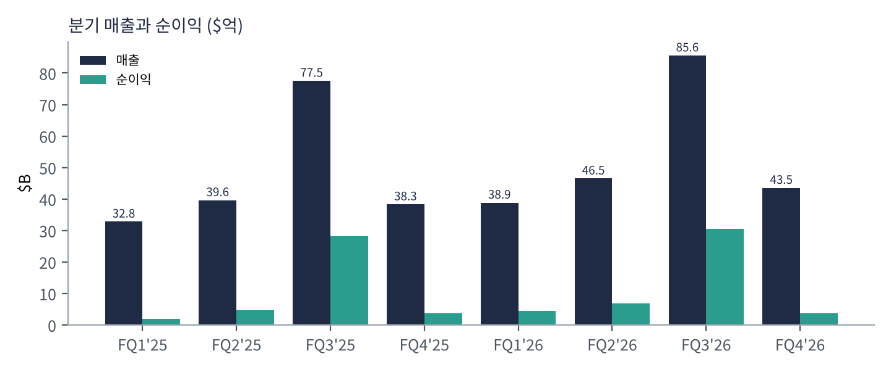
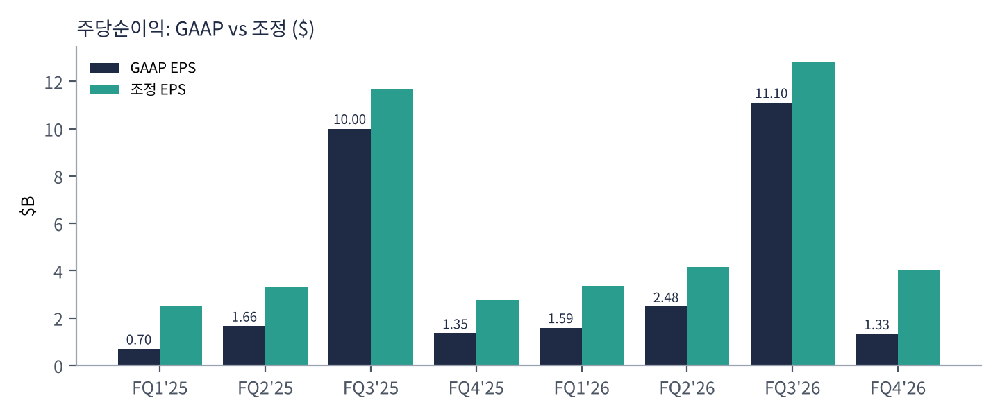
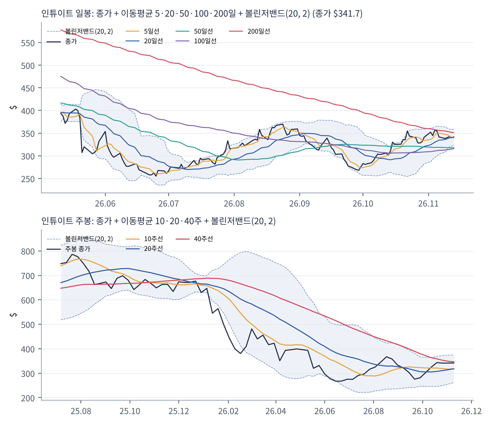

인튜이트는 TurboTax·QuickBooks·Credit Karma·Mailchimp를 운영하는 재무 소프트웨어 회사다. FY26 매출이 +14% 늘고 비GAAP EPS가 +20% 늘었지만, FY27 가이던스가 낮고 소비자 세금 점유율이 떨어졌으며 주가가 연고점 $682의 절반 수준인 회사다. 주가는 $341.7다.
| 항목 | 내용 |
|---|---|
| 종목 | Intuit (INTU) · NASDAQ · 소프트웨어(재무·세금) · 캘리포니아 마운틴뷰 |
| 멀티플 | PER 20.7배 · PEG 1.01 · P/S 4.31배 (11/13 종가 $341.7) |
| 최근 분기(FQ4'26) | 매출 $43.5억(+14%), GAAP EPS $1.33, 비GAAP EPS $4.03(+47%) |
| 가이던스(FY27) | 매출 $232.8~235.1억(+9~10%), GAAP EPS $20.12~20.36, 비GAAP EPS $22.88~23.12(새 기준) |
| 현금·부채 | 스캐너: 현금 $72.0억, 총차입금 $84.2억, TTM 잉여현금 $86.2억 |
| 직책 | 인물 | 역할·특징 |
|---|---|---|
| 회장·CEO | 사산 구다르지(Sasan Goodarzi) | Big Bets(보조 세금·머니·중견기업) +34%, 전체 매출의 30%를 성과로 제시 |
| CFO | 산딥 아우질라(Sandeep Aujla) | FY27 가이던스에서 'FY27은 고객 성장을 위한 의도적 조정'이라고 설명 |
경영 스타일: '여러 서비스를 한 플랫폼에 묶고 AI로 고객 경험을 바꾼다'. FY26에 자사주 $55억(+96%)을 사고 배당을 15% 올렸으며, 잔여 매입 한도가 $79억이다. 2026년 초 TurboTax 매출 전망을 낮추고 구조조정을 발표했다.
FQ4 Online Ecosystem 매출 +17%(Mailchimp 제외 +20%), QuickBooks Online 회계 매출 +23%(FY26).
Credit Karma 회원이 TurboTax를 시작하는 비율이 +54% 늘었고, 두 제품을 쓰는 고객은 단일 고객의 약 2배 매출을 낸다(회사 설명).
다음 실적발표(FQ1'27)는 세 가지 질문에 답하는 자리다.
질문 1. FQ1 매출이 가이던스(+11%) 안인가?
| 확인할 숫자 | 좋아지면 | 나빠지면 |
|---|---|---|
| FQ1 가이던스: 매출 $42.94~43.13억(+11%), GAAP EPS $1.71~1.75, 비GAAP EPS $2.44~2.48(SBC 포함 새 기준), 비GAAP 영업이익 $9.02~9.15억 | 안이면 ②매출 고리가 이어진다 | 미달이면 FY27 매출 +9~10% 가이던스가 흔들린다 |
질문 2. 소비자 세금(TurboTax)이 안정되는가?
| 확인할 숫자 | 좋아지면 | 나빠지면 |
|---|---|---|
| FY27 TurboTax 성장 약 2~3%, FY26 미국 TurboTax 유닛 3,900만(-2%), IRS e-file 점유율 -1%p, 자체 입력 세금 점유율 -3%p | 안정되면 ①고객 고리의 약한 곳이 풀린다 | 추가 하락이면 Consumer 성장이 가이던스에 못 미친다 |
질문 3. 새 EPS 기준과 사업 분리 보고가 확인되는가?
| 확인할 숫자 | 좋아지면 | 나빠지면 |
|---|---|---|
| FY27 비GAAP EPS 가이던스 $22.88~23.12(SBC 포함, 영향액은 $5.81과 $1.48 두 값이 있어 확인 필요), Mailchimp는 FY27부터 별도 부문(성장 약 -1%) | 확인되면 새 기준 대비 FY26 비교가 명확해진다 | 불명확하면 성장률 비교가 어렵다 |
한 줄 판정 규칙: 첫 질문이 가이던스 안이고 TurboTax가 안정되면 약한 고리가 풀리고, 소비자 세금 점유율이 더 떨어지면 매출·고객 고리가 약해진다.
일정: 2026-11-19 예정(트레이딩뷰 일정, 회사 확정 확인 필요). 발표는 11/16 기준 사흘 남았다.
| 분기 | 매출 | 순이익 | EPS | 조정 EPS | 특이 사항 |
|---|---|---|---|---|---|
| FQ1'25(24.10) | $32.8억 | $2.0억 | 0.70 | 2.50 | |
| FQ2'25(25.1) | $39.6억 | $4.7억 | 1.66 | 3.32 | |
| FQ3'25(25.4) | $77.5억 | $28.2억 | 10.00 | 11.65 | |
| FQ4'25(25.7) | $38.3억 | $3.8억 | 1.35 | 2.75 | |
| FQ1'26(25.10) | $38.9억 | $4.5억 | 1.59 | 3.34 | |
| FQ2'26(26.1) | $46.5억 | $6.9억 | 2.48 | 4.15 | |
| FQ3'26(26.4) | $85.6억 | $30.6억 | 11.10 | 12.80 | |
| FQ4'26(26.7) | $43.5억 | $3.6억 | 1.33 | 4.03 | FQ4'26 매출 +14%, 조정 EPS +47%(회사 기준) |


값은 트레이딩뷰 스캐너 분기 이력이다. 회계연도가 7월 31일 종료라 FQ3(2~4월)에 세금 시즌 매출이 몰린다. 조정 EPS는 회사 발표 비GAAP EPS이며 FQ4'26은 $4.03이다(트레이딩뷰 Reported는 $2.17로 표시돼 달라 회사 값을 썼고 차이 원인은 확인 필요). 분기 설비투자는 구하지 못했다.
흐름 요약: FQ3(세금 시즌)이 매출 $85.6억으로 연간의 약 40%를 차지한다. FQ4'26 매출 $43.5억(+14%), 비GAAP EPS $4.03(+47%)로 가이던스를 넘었지만 FY27 가이던스가 낮아 주가는 내렸다.
| 항목 | 값 | 비고 |
|---|---|---|
| FY26 Global Business Solutions | $128.6억 | 전년비 +16%, 매출의 약 60% |
| FY26 Online Ecosystem | $99억 | 전년비 +19%(Mailchimp 제외 +23%) |
| FY26 Consumer | $86억 | 전년비 +11% |
| FY26 TurboTax | $53억 | 전년비 +7%, TurboTax Live +37% |
| FY26 Credit Karma | $26억 | 전년비 +20% |
| FY26 ProTax | $6.47억 | 전년비 +4% |
성장은 중견기업·온라인 서비스(QuickBooks)와 Credit Karma에서 나온다. FY27 가이던스는 GBS +13~14%, Credit Karma +11~13%, ProTax 약 +2%, 데스크톱 한 자릿수 초반 감소로 성장이 둔화된다.
인튜이트는 '세금·회계·신용·마케팅을 AI가 대신하는 하나의 플랫폼으로 묶어 고객이 번영하도록 돕는 것'을 목표로 한다.
| 축 | 최근 움직임 |
|---|---|
| 제품 | Big Bets: 보조 세금, 머니(결제·대출), 중견기업 ERP — 매출의 30% |
| 재무 | FY27 매출 +9~10%, 영업이익률 확대, 자사주 매입 계속 |
| 구조 | Mailchimp를 FY27부터 별도 부문으로 분리 |

| 이동평균 | 값 | 종가 대비 | 해석 |
|---|---|---|---|
| 5일선 | $340.64 | +0.3% | 현재가가 위 |
| 20일선 | $340.83 | +0.3% | 현재가가 위 |
| 50일선 | $317.68 | +7.6% | 현재가가 위 |
| 100일선 | $315.91 | +8.2% | 현재가가 위 |
| 200일선 | $350.75 | -2.6% | 현재가가 아래 (-3%) |
주봉 흐름: 52주 고점 $682.27(11/21), 52주 저점 $252.84(6/22). 현재가 $341.70는 200일선 $350.75보다 아래, 50일선 $317.68보다 위에 있다.
| 규칙 | 기준 | 현재 값 | 신호 |
|---|---|---|---|
| 장기 추세 필터 | 종가 vs 200일선 | $341.70 < $350.75 | 매도 |
| 중장기 교차 | 50일선 vs 200일선 | $317.68 < $350.75 | 매도 |
| 단기 교차 | 20일선 vs 50일선 | $340.83 > $317.68 | 매수 |
| 돈키언 채널 | 55일 고가 $366.47 / 저가 $262.32 | 중간값 $314.39 위 | 매수 |
| 1개월 모멘텀 | 21거래일 수익률 | +3.5% (기준 $330.17) | 매수 |
| 3개월 모멘텀 | 63거래일 수익률 | +1.8% (기준 $335.60) | 매수 |
| 6개월 모멘텀 | 126거래일 수익률 | -13.1% (기준 $393.00) | 매도 |
| 12개월 모멘텀 | 252거래일 수익률 | -48.2% (기준 $659.30) | 매도 |
| 종합 (8개 평균) | +0.00 | 중립 |
해석: 8개 신호 중 매수 4개, 매도 4개(점수 +0.00, 중립)다. 14일 ATR $13.05 (3.8%).
| 가격·조건 | 무엇이 바뀌나 | 의미 |
|---|---|---|
| $350.75 돌파 | 200일선 | 매도 → 매수 |
| 50일선이 200일선 위로 | 50/200 교차 | 매도 → 매수 |
| $393.00 돌파 | 6개월 기준가 | 매도 → 매수 |
| $659.30 돌파 | 12개월 기준가 | 매도 → 매수 |
| 20일선이 50일선 위로 | 20/50 교차 | 이탈하면 매수 → 매도 |
| $314.39 돌파 | 돈키언 중간값 | 이탈하면 매수 → 매도 |
| $330.17 돌파 | 1개월 기준가 | 이탈하면 매수 → 매도 |
| 구분 | 가격대 | 근거 |
|---|---|---|
| 저항 1 | $350.75 | 200일선 |
| 저항 2 | $366.47 | 55일 고점 |
| 지지 1 | $340.83 | 20일선 |
| 지지 2 | $340.64 | 5일선 |
점수는 +0.00(중립)다. 14일 ATR은 $13.05로 현재가의 3.8%다. 가까운 저항 $350.75을 종가로 넘는지와 가까운 지지 $340.83를 지키는지가 신호 전환의 기준이다. (내 가정, 매매 권유 아님)
| 악재 요인 | 내용 | 강도 |
|---|---|---|
| 소비자 세금 둔화 | TurboTax FY27 성장 약 2~3%, IRS e-file 점유율 -1%p, 자체 입력 -3%p | 높음 |
| 가이던스 하향 충격 | FY27 매출 +9~10%, 새 기준 비GAAP EPS $22.88~23.12(FY26 $24.27과 비교 불가) | 높음 |
| AI 경쟁 | 고객이 AI 도구로 직접 세금·회계 처리, 애널리스트 목표가 $290~300(일부) | 중간 |
| Mailchimp 부진 | FY27 약 -1%, 별도 부문 분리 | 중간 |
| 주가 낙폭 | 연고점 $682(2025.11) 대비 약 -50%(내 계산) | 중간 |
| 티커 | 회사 | PER(TTM) | PEG | P/S | EPS 성장(YoY) |
|---|---|---|---|---|---|
| INTU | 인튜이트 | 20.7배 | 1.01 | 4.31배 | +20% |
| ADBE | 어도비 | 13.6배 | 1.14 | 3.63배 | +12% |
| CRM | 세일즈포스 | 19.9배 | 0.33 | 4.07배 | +59% |
| ADSK | 오토데스크 | 34.2배 | 0.56 | 7.01배 | +60% |
| WDAY | 워크데이 | 39.9배 | 0.30 | 4.62배 | +128% |
INTU 첫 행은 스캐너 값이다. 어도비 PER 13.6배·PEG 1.14, 세일즈포스 PER 19.9배는 같은 소프트웨어 업종 비교다. INTU와 어도비는 AI 경쟁 우려가 주가에 반영된 점이 공통으로 보인다(내 해석).
인튜이트는 현금 $72.0억, 총차입금 $84.2억이고 TTM 잉여현금이 $86.2억이다. 순차입은 약 $12.2억(내 계산)이며, FY26에 자사주 $55억을 사서 현금 대부분을 주주환원에 썼다(잔여 한도 $79억).
| 지표 | 값 | 계산·출처 | 해석 |
|---|---|---|---|
| 현금 | $72.0억 | 스캐너 | 회사 발표 현금 $72억과 같음 |
| 총차입금 | $84.2억 | 스캐너 | 회사 설명 부채 $77억(차이 확인 필요), 순차입 약 $12.2억(내 계산) |
| TTM 잉여현금흐름 | $86.2억 | 스캐너 | TTM 매출 $214.5억 대비 약 40.2%(내 계산) |
| TTM 설비투자 | $2.2억 | 스캐너 | 매출 대비 약 1.0%(내 계산) |
| 기준 | 값 | 비고 |
|---|---|---|
| P/S (TTM) | 4.31배 | 스캐너 |
| 동종 | ADBE 3.63, CRM 4.07, ADSK 7.01, WDAY 4.62 | 11/13 스캐너 |
해석: P/S 4.3배는 어도비·세일즈포스(3.6~4.1배)보다 약간 높고 오토데스크(7.0배)보다 낮다. 영업이익률 28.8%와 잉여현금 마진 40%로 매출 대비 가격이 중간 수준이다(내 해석).
| 지표 | 값 | 판정 |
|---|---|---|
| PER (GAAP TTM) | 20.7배 | 스캐너, TTM EPS $16.50 |
| PER (비GAAP FY26) | 약 14.1배 | $341.7 ÷ FY26 비GAAP EPS $24.27(내 계산) |
| TTM EBITDA | $70.2억 | 스캐너, 매출 대비 약 32.7%(내 계산) |
| TTM 영업이익률 | 28.8% | 스캐너 |
| 방식 | PER | EPS 성장률 | PEG | 판정 |
|---|---|---|---|---|
| 트레이딩뷰 (GAAP TTM) | 20.7배 | +20.3% | 1.01 | GAAP EPS 기준 |
| 조정 EPS (FY26, 내 계산) | 약 14.1배 | +20%(회사) | 약 0.70 | FY26 비GAAP EPS $24.27, 성장 +20% |
판정: PEG 1.01은 투자 적격(≤1.0) 기준 바로 위이고, 비GAAP 기준 약 0.70은 기준 아래다.FY27 가이던스는 SBC를 포함한 새 기준($22.88~23.12)이라 FY26 $24.27과 직접 비교할 수 없다. GAAP EPS 가이던스 $20.12~20.36은 TTM $16.50 대비 약 +23%(내 계산)다.

인튜이트의 사이클은 고객·플랫폼 이용 → 매출 → 이익·현금 → AI·Big Bets 투자 → 교차 판매·고객 확대이다. 번 현금을 AI와 성장 사업에 다시 써서 고객당 매출을 늘린다.
| 고리 | 현재 숫자 | 고리 강도 | 약해지는 신호 |
|---|---|---|---|
| ① 고객·플랫폼 이용 | 약 1억 고객, Credit Karma→TurboTax 신규 +54% | 보통 | IRS e-file 점유율 -1%p, 자체 입력 -3%p |
| ② 매출 | FY26 $214.5억(+14%), FY27 +9~10% | 보통 | 성장 둔화 가이던스 |
| ③ 이익·현금 | 잉여현금 $86.2억, 영업이익률 28.8% | 강함 | 새 기준 EPS(SBC 포함)로 하향 |
| ④ AI·Big Bets 투자 | Big Bets +34%, 매출의 30% | 강함 | AI 경쟁(고객이 직접 AI로 세금 처리) |
| ⑤ 교차 판매·고객 확대 | TurboTax + Credit Karma 고객 매출 약 2배 | 보통 | Mailchimp -1% |
구조: ③④는 강하지만 ①의 소비자 세금 점유율이 떨어지고 있어 ②매출 성장이 둔화되는 것이 가장 약한 곳이다. FQ1~FQ3(세금 시즌)에서 TurboTax 안정이 확인돼야 사이클이 닫힌다(내 해석).